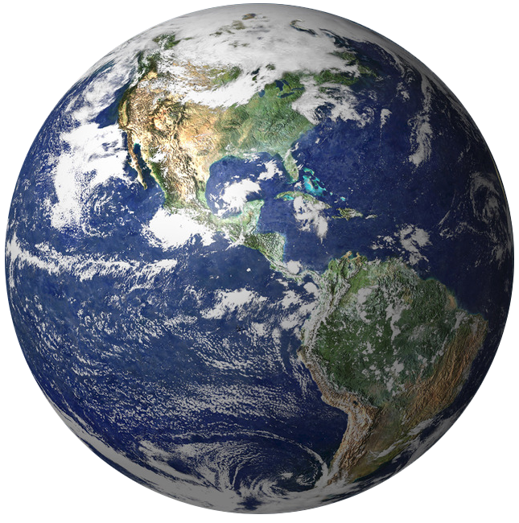

Tierra

La Tierra es el hogar de los seres vivos y se formó hace más de 4,500 millones de años. Es el quinto planeta más grande del Sistema Solar y el tercero más cercano al Sol; su distancia promedio a éste es de unos 150 millones de kilómetros.
El planeta experimenta dos movimientos: rotación y traslación. El primero es efectuado alrededor del eje polar en el sentido contrario al de las manecillas del reloj, es decir, de oeste a este. El movimiento de traslación es el que realiza alrededor del Sol en una órbita casi circular. Los movimientos de la Tierra y las condiciones en que se encuentra en el Sistema Solar inciden en una serie de fenómenos increíbles y naturales: erupciones volcánicas, tormentas, terremotos, estaciones, eclipses, mareas y muchas más.
La estructura terrestre está compuesta por 3 capas: corteza, manto y núcleo. La corteza es la capa más delgada y superficial, en cuyo exterior se encuentran sedimentos. El manto es la capa bajo la corteza y está formado por densas rocas. Representa cerca del 83% del volumen de la Tierra. El núcleo, por su parte, es la capa más profunda y al parecer contiene hierro, níquel y azufre.
La atmósfera es una mezcla de gases: 78% de nitrógeno, 21% de oxígeno y 1% de otros. Del mismo modo que la Tierra tiene una estructura geológica, la atmósfera consiste en varias capas: troposfera, estratosfera, mesosfera, ionosfera y exosfera. La troposfera es la capa más cercana al suelo y la más densa.
El planeta está cubierto por agua en casi un 71%, por lo que se le llama a menudo “el planeta azul”.
Diámetro: 12,104 kilómetros.
Masa: 5.9722 x 1024 kg.
Volumen: 1,083,206,916,846 km3.
Densidad: 5.513 g/cm3.
Temperatura superficial mínimia/máxima: -88/58 °C.